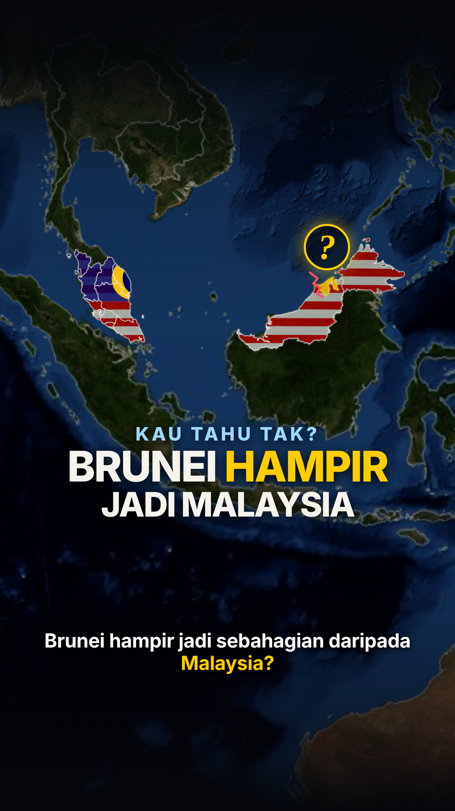
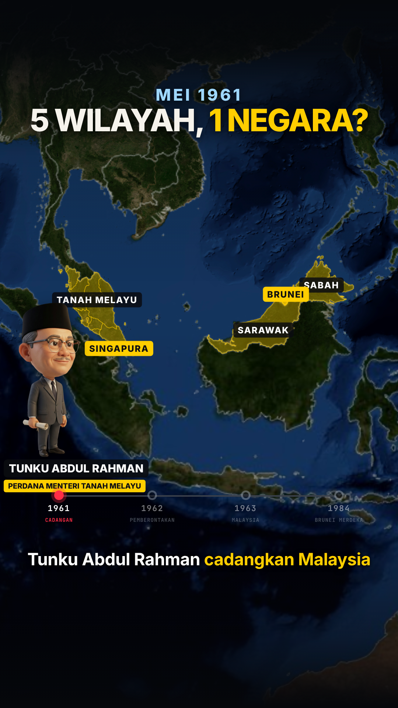
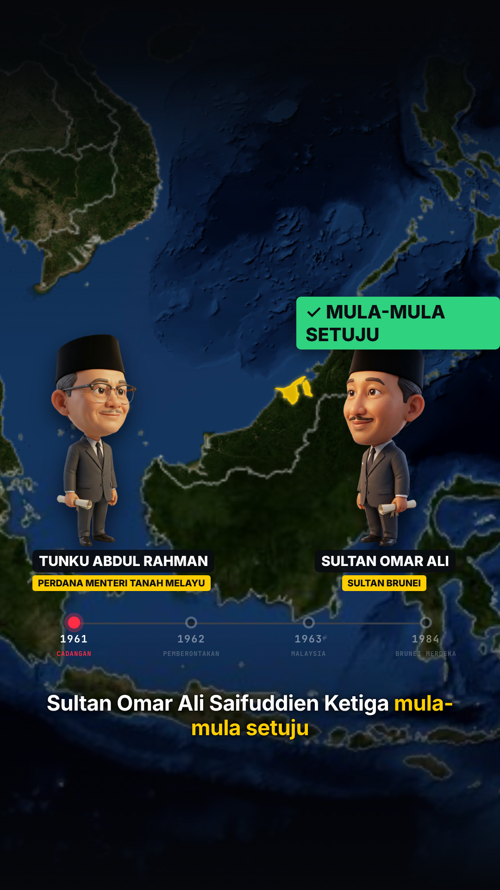
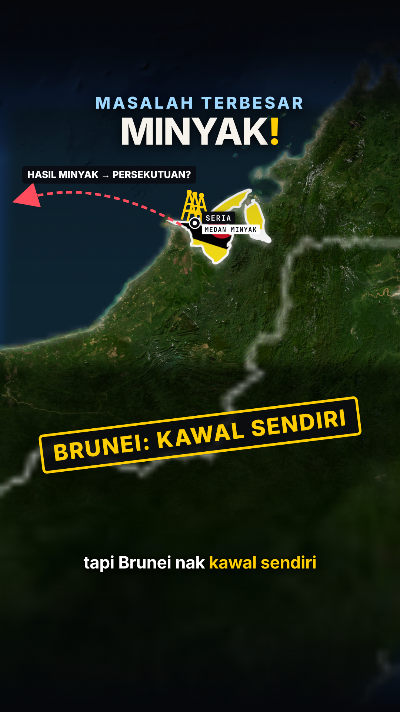
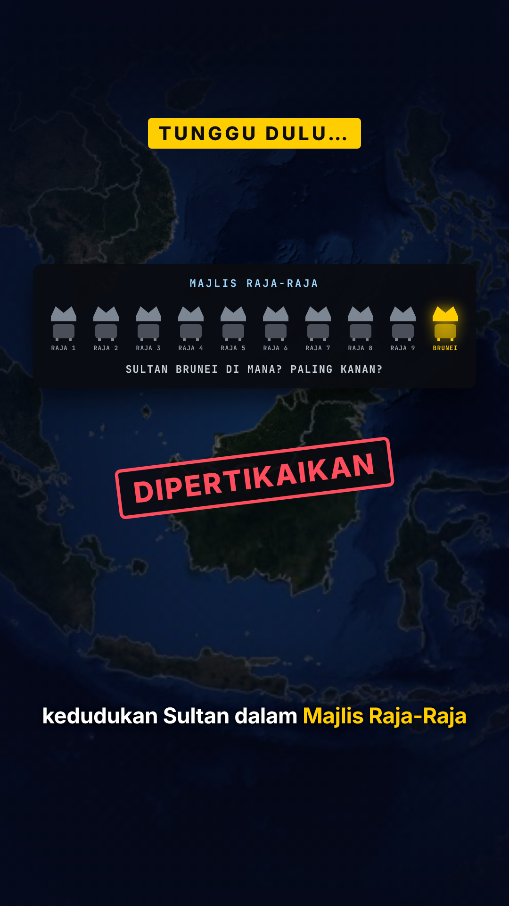
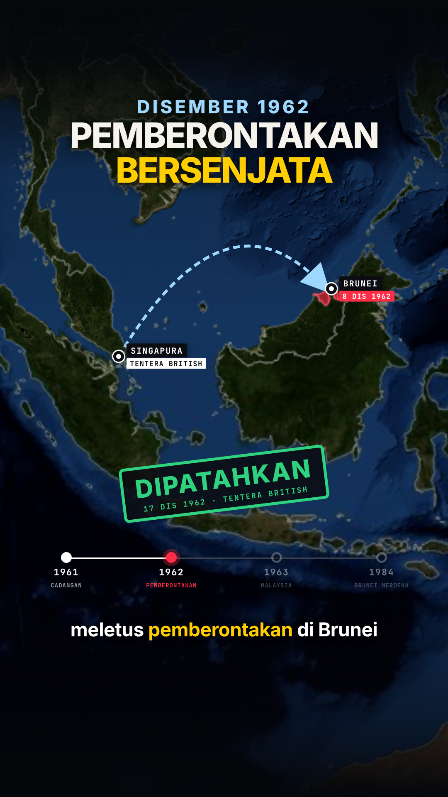
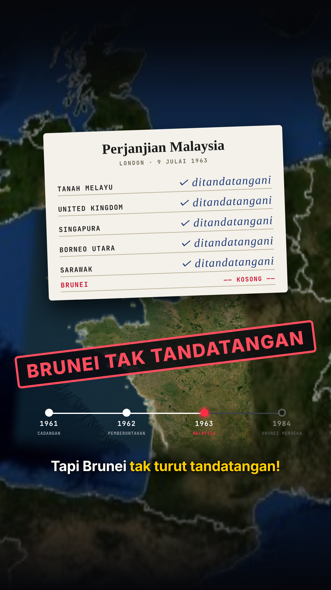
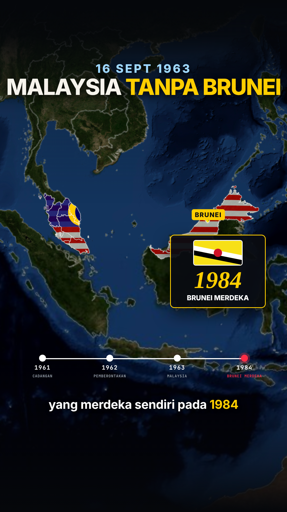
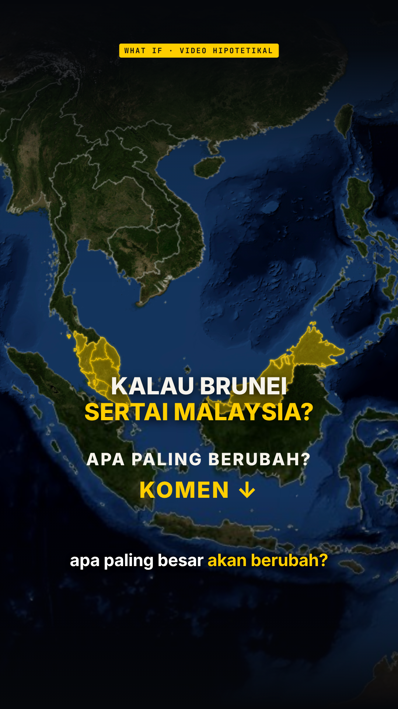

MAP ANIMATION · 1080×1920 · maks 60 s · karikatur Tunku & Sultan (gaya sama) · garis masa 1961 → 1984 · navy + emas, merah untuk konflik · tarikh 8 Julai diganti 9 Julai 1963 (disahkan)

01 · 0:00
Hook
"Kau tahu tak, Brunei hampir jadi sebahagian daripada Malaysia? Tapi saat akhir, negara kaya minyak ni tarik diri…"
Peta Malaysia berbendera. Brunei menyala emas dengan ?, garis retak merah, dan Brunei "tercabut" keluar dari peta.

02 · 0:08
Mei 1961 · Tunku
"Tahun 1961, Tunku Abdul Rahman cadangkan Malaysia: Tanah Melayu, Singapura, Sabah, Sarawak, dan Brunei."
Karikatur Tunku jatuh masuk. 5 wilayah menyala satu demi satu ikut sebutan. Garis masa 1961 menyala.

03 · 0:16
Sultan setuju
"Sultan Omar Ali Saifuddien Ketiga mula-mula setuju."
Karikatur Sultan (dari kau) jatuh masuk di sebelah Tunku, dengan cip hijau ✓ MULA-MULA SETUJU.

04 · 0:20
MINYAK
"Masalah terbesar? Minyak! Persekutuan mahu kongsi hasil minyak Brunei, tapi Brunei nak kawal sendiri."
Zoom ke Seria (imej satelit tajam), bendera Brunei, menara minyak emas. Anak panah hasil minyak ke Persekutuan, lepas tu cop KAWAL SENDIRI.

05 · 0:27
Re-hook
"Dan tunggu dulu! Kedudukan Sultan dalam Majlis Raja-Raja pun dipertikaikan."
Muzik dip + flash. Barisan 9 mahkota Raja-Raja dan mahkota Brunei menyala, dengan soalan "PALING KANAN?" dan cop DIPERTIKAIKAN.

06 · 0:32
Dis 1962
"Disember 1962, meletus pemberontakan di Brunei, menentang Malaysia. Ia dipatahkan tentera British."
Brunei merah berdenyut. Anak panah tentera British dari Singapura, dan cop hijau DIPATAHKAN · 17 DIS 1962. Garis masa 1962.

07 · 0:39
9 Julai 1963
"9 Julai 1963, Perjanjian Malaysia ditandatangani. Tapi Brunei tak turut tandatangan!"
Terbang ke London. Dokumen perjanjian, 5 baris ✓ ditandatangani, baris Brunei KOSONG, dan cop BRUNEI TAK TANDATANGAN.

08 · 0:46
1963 → 1984
"Malaysia terbentuk tanpa Brunei, yang merdeka sendiri pada 1984."
Balik ke Borneo. 16 SEPT 1963: MALAYSIA TANPA BRUNEI. Kad bendera Brunei 1984 · MERDEKA, dan garis masa lengkap.

09 · 0:53
CTA
"Kalau Brunei sertai Malaysia, apa paling besar akan berubah? Komen kat bawah!"
Peta WHAT IF (label hipotetikal): Malaysia dan Brunei bercantum dalam emas. KOMEN ↓.
Garis masa di bawah skrin sepanjang video · karikatur jatuh masuk dan melantun · zoom punch pada tarikh dan kata kunci · tiada B-roll · satu CTA